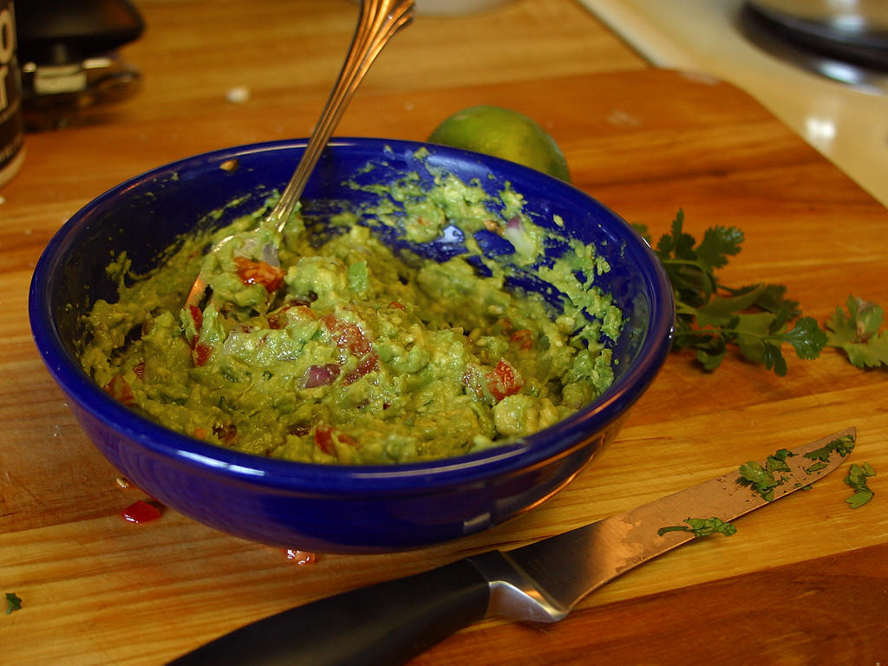

Guacamole

The dip that keeps on giving
Pair with our nachos, or use your favourite tortilla chips to spoon straight out of the bowl!
Ingredients
- Two avocados
- One roma tomato
- Half a red onion
- One lime
- One tablespoon of olive oil
- One tablespoon of milk (you can substitute with greek yogurt)
- Salt
- Pepper
- Garlic powder
- Onion powder
- Cilantro
Steps
- Split the avocados in half and empty them into a bowl. Smash to desired chunkiness.
- Finely dice the tomato and the onion. Add to the bowl and mix.
- Juice the lime and add to bowl.
- Add the olive oil and the milk or greek yogurt to the bowl.
- Add salt, pepper, garlic powder and onion powder to taste and mix.
- Optional: finely chop cilantro to taste and mix it with the guacamole. You can also use cilantro as a garnish, to top it off.
- Serve with chips or as a side for our next recipe, nachos!